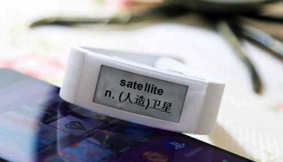

显示屏技术
方案概述
智能硬件设备的人机交互离不开显示屏技术，JUMA的智能硬件支持OLED、双稳态、柔性墨水等多重显示屏技术。为了方便的让开发者在显示屏上绘制图案，JUMA也推出了一个嵌入式图形编程库。
功能列表
- 嵌入式图形编程库(GUI Lib)
- 手环/手表OLED显示屏
- 双稳态液晶显示屏
- 柔性墨水屏
效果演示
1. 手环/手表OLED显示屏
2. 双稳态液晶显示屏

智能硬件设备的人机交互离不开显示屏技术，JUMA的智能硬件支持OLED、双稳态、柔性墨水等多重显示屏技术。为了方便的让开发者在显示屏上绘制图案，JUMA也推出了一个嵌入式图形编程库。